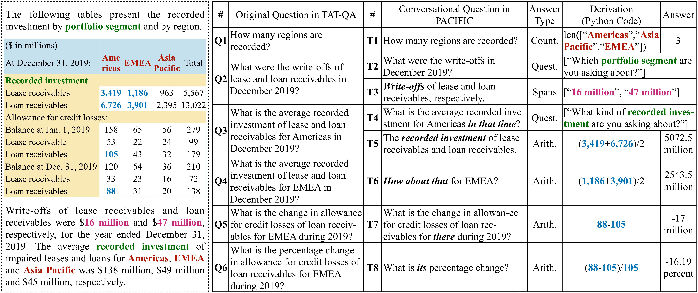

PACIFIC (ProAactive ConversatIonal question answering in FInanCe) is a large-scale conversational question answering (CQA) dataset, aiming to stimulate progress of proactive CQA research over more complex and realistic tabular and textual data, especially those requiring numerical reasoning.
The PACIFIC dataset is built from the TAT-QA dataset by using its question-answer pairs as guidance for constructing conversation sessions. Compared with existing datasets, PACIFIC exhibits three key challenges:
In total, PACIFIC contains 2,757 dialogues associated with 19,008 QA turns.
The following is an example of PACIFIC and the corresponding example from TAT-QA. The left dashed line box shows a hybrid context.

{
"table": { # The tabular data in a hybrid context
"uid": "e78f8b29-6085-43de-b32f-be1a68641be3", # The unique id of a table
"table": [ # The table content which is 2d-array
[
"",
"2019",
"2018",
"2017"
],
...
[
"Discount rate",
"2.3",
"2.5",
"2.6"
]
]
},
"paragraphs": [ # The textual data in a hybrid context comprising at least two associated paragraphs to the table
{
"uid": "62be4f5a-1693-4e6b-8bb4-0a4e1e40b409", # The unique id of a paragraph
"order": 1, # The order of the paragraph in all associated paragraphs, starting from 1
"text": "Actuarial assumptions" # The content of the paragraph
},
...
],
"questions": [ # The questions associated to the hybrid context
{
"uid": "d0d414be-e75d-43cb-b37a-c96d6367aae2", # The unique id of a question
"order": 4, # The order of the question in the conversation, starting from 1
"question": "What is the average rate of inflation?", # The question itself
"answer": [ # The ground-truth answer
"Which year are you asking about?"
],
"derivation": "", # The derivation that can be executed to arrive at the ground-truth answer
"answer_type": "question", # The answer type including `span`, `spans`, `arithmetic`, `counting`, and `question`.
"answer_from": "table", # The source of the answer including `table`, `table` and `table-text`
"rel_paragraphs": "", # The orders of the paragraphs that are relied to infer the answer if any.
"req_comparison": false, # A flag indicating if `comparison/sorting` is needed to answer the question whose answer is a single span or multiple spans
"scale": "" # The scale of the answer including `None`, `thousand`, `million`, `billion` and `percent`
"req_clari": true, # Whether the user question requires clarifications.
"follow_up": false, # Whether the user question is a follow-up question that requires the information from the previous conversation.
"original_question": "What is the average rate of inflation?", # The self-contained question for query rewriting.
}
]
}
To evaluate your models, we have also made available the evaluation script we will use for official evaluation, To run the evaluation, use
python pacific_eval.py --gold_path=:path_to_dev --pred_path=:path_to_predictions
The predictions file in JSON format contains a dictionary with question ids as keys and the predictions as values (each prediction shall include both `answer` and `scale` in an array). For example,
{
"9337c3e6-c53f-45a9-836a-02c474ceac16": [
"4.6",
"percent"
],
"c4170232-e89c-487a-97c5-afad45e9d702": [
"16",
"thousand"
],
"d81d1ae7-363c-4b47-8eea-1906fef33856": [
["2018", "2019"],
""
]
...
}
The evaluation and the submission follow the same form as TAT-QA.
Please email the prediction file of the test set with the following information to us:
Please give us up to two weeks to evaluate your submission and we will add your model to the leaderboard.
For more information, please contact:
Please kindly cite our work if you use our dataset or codes, thank you.
@inproceedings{emnlp22pacific,
author = {Yang Deng and
Wenqiang Lei and
Wenxuan Zhang and
Wai Lam and
Tat{-}Seng Chua},
title = {{PACIFIC:} Towards Proactive Conversational Question Answering over
Tabular and Textual Data in Finance},
booktitle = {Proceedings of the 2022 Conference on Empirical Methods in Natural
Language Processing, {EMNLP} 2022},
pages = {6970--6984},
year = {2022},
}